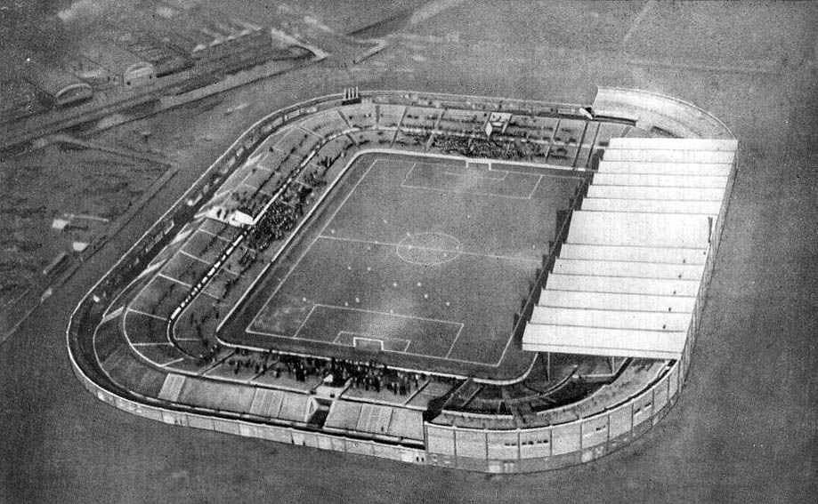

历史与荣耀
一支球队的尊严,写在它如何面对低谷的那一刻。
荣誉墙
截至弗格森时代的俱乐部荣誉(此后若有新增,以官方为准)。
20 座顶级联赛冠军
全部按夺冠赛季列示:前 7 座来自一战与二战后年代,后 13 座全部来自英超时代(1992 年英超成立)。
| 序号 | 赛季 | 时期 |
|---|---|---|
| 1 | 1907–08 | 英格兰顶级联赛 |
| 2 | 1910–11 | 英格兰顶级联赛 |
| 3 | 1951–52 | 英格兰顶级联赛 |
| 4 | 1955–56 | 英格兰顶级联赛 |
| 5 | 1956–57 | 英格兰顶级联赛 |
| 6 | 1964–65 | 英格兰顶级联赛 |
| 7 | 1966–67 | 英格兰顶级联赛 |
| 8 | 1992–93 | 英超时代 · 弗格森首冠 |
| 9 | 1993–94 | 英超时代 |
| 10 | 1995–96 | 英超时代 · 双冠 |
| 11 | 1996–97 | 英超时代 |
| 12 | 1998–99 | 英超时代 · 三冠王 |
| 13 | 1999–2000 | 英超时代 |
| 14 | 2000–01 | 英超时代 |
| 15 | 2002–03 | 英超时代 |
| 16 | 2006–07 | 英超时代 |
| 17 | 2007–08 | 英超时代 · 欧冠双冠 |
| 18 | 2008–09 | 英超时代 |
| 19 | 2010–11 | 英超时代 |
| 20 | 2012–13 | 英超时代 · 弗格森告别 |
年代纪事

{kind=link}
- 1878–1902
出身与更名
1878 年,兰开夏与约克郡铁路公司的工人组建「牛顿希斯 LYR 足球队」,最初在自家球场的场地上踢球。1902 年,俱乐部财务濒临崩溃,经重组后正式更名为曼彻斯特联,沿用至今。
- 1910–1945
老特拉福德与战争年代
1910 年,曼联搬进由建筑师阿奇博尔德·利奇设计的新球场老特拉福德。两次世界大战之间球队几经沉浮;二战期间老特拉福德遭轰炸,俱乐部一度租借曼城的主场缅因路。1945 年,马特·巴斯比出任主帅,命运开始转向。
- 1945–1958
巴斯比宝贝与慕尼黑空难
巴斯比打破传统,大胆提拔青训,球队平均年龄极低却横扫青年赛事,媒体称他们为「巴斯比宝贝」。1957 年他们杀入欧冠半决赛,1958 年 2 月 6 日,欧冠客场归途,飞机在慕尼黑风雪中坠毁:8 名球员罹难,巴斯比重伤住院。全世界的足球界都在为曼联默哀——俱乐部一度只剩九名可用球员。
- 1958–1969
重生与三圣
巴斯比拒绝倒下,从废墟中重建球队。查尔顿、贝斯特与丹尼斯·劳相继成为传奇,合称「三圣」。1968 年 5 月 29 日,温布利大球场,慕尼黑空难整整十周年之后,曼联 4-1 击败本菲卡,捧起队史首座欧洲冠军杯——这是对遇难者最郑重的告慰。
- 1969–1986
漫长的低谷
巴斯比时代落幕后的十七年,曼联在联赛中起伏不定,只在足总杯中偶有斩获。1981 年,传奇教练阿特金森接手也未能改变联赛无冠的窘境。老特拉福德等待着一场更彻底的变革。
- 1986–2013
弗格森王朝
1986 年 11 月,阿历克斯·弗格森接任主帅。执教初期战绩惨淡,一度濒临下课,但董事会选择了信任。1990 年足总杯夺冠稳住帅位,1993 年——时隔 26 年——曼联重夺联赛冠军。此后二十年,曼联在英超夺得 13 座冠军,1999 年更成为英格兰史上首支「三冠王」。2013 年,弗格森以第 20 座顶级联赛冠军作别,他的时代被称为英国足球史上最成功的执教生涯。
1958 年 2 月 6 日 · 慕尼黑空难
空难共夺走 23 条生命,其中 8 名曼联球员与 3 名俱乐部职员。老特拉福德的纪念钟,指针永远停在 15:13。
杰夫·本特 Geoff Bent
左后卫,随队替补。27 岁。
罗杰·伯恩 Roger Byrne
队长,左后卫,英格兰国脚。28 岁,新婚不到一个月。
埃迪·科尔曼 Eddie Colman
右后卫,巴斯比宝贝中最年轻者之一。年仅 21 岁。
邓肯·爱德华兹 Duncan Edwards
中场,当时公认的天才少年;重伤后 15 天不治,年仅 21 岁。
马克·琼斯 Mark Jones
中卫,防线主力。24 岁。
大卫·佩格 David Pegg
左边锋,英格兰青年国脚。22 岁。
汤米·泰勒 Tommy Taylor
中锋,当时英格兰身价纪录保持者。26 岁。
比利·惠兰 Billy Whelan
内锋,爱尔兰国脚。22 岁。
1999 三冠王专题
英格兰足球史上第一支单赛季包揽英超、足总杯、欧冠的球队。
英超
最终积分 79 分,1 分优势压过阿森纳(78 分)夺冠。
足总杯
决赛 2-0 击败纽卡斯尔(谢林汉姆、斯科尔斯进球),队史第 10 座足总杯。
欧冠
半决赛淘汰尤文图斯:首回合主场 1-1,次回合客场上半场 0-2 落后、下半场连入三球逆转,总比分 4-3,决赛诺坎普之夜。
1999 年 5 月 26 日 · 巴塞罗那诺坎普
- 第 6 分钟
意外失球
拜仁慕尼黑由巴斯勒任意球直接破门,曼联 0-1 落后,此后一直难以叩开对手球门。
- 90+1'
谢林汉姆扳平
补时阶段角球进攻,谢林汉姆转身推射破门,1-1。曼联从悬崖边被拉回。
- 90+3'
索尔斯克亚绝杀
两分钟后同一侧角球,替补登场的索尔斯克亚垫射入网,2-1!诺坎普瞬间失声,拜仁球员瘫倒在地。
- 终场
三冠加冕
曼联捧起队史第 2 座欧冠,完成英格兰足球史上首个三冠王赛季。弗格森赛后说:「我此生再不会比此刻更骄傲。」